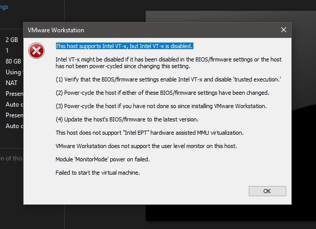
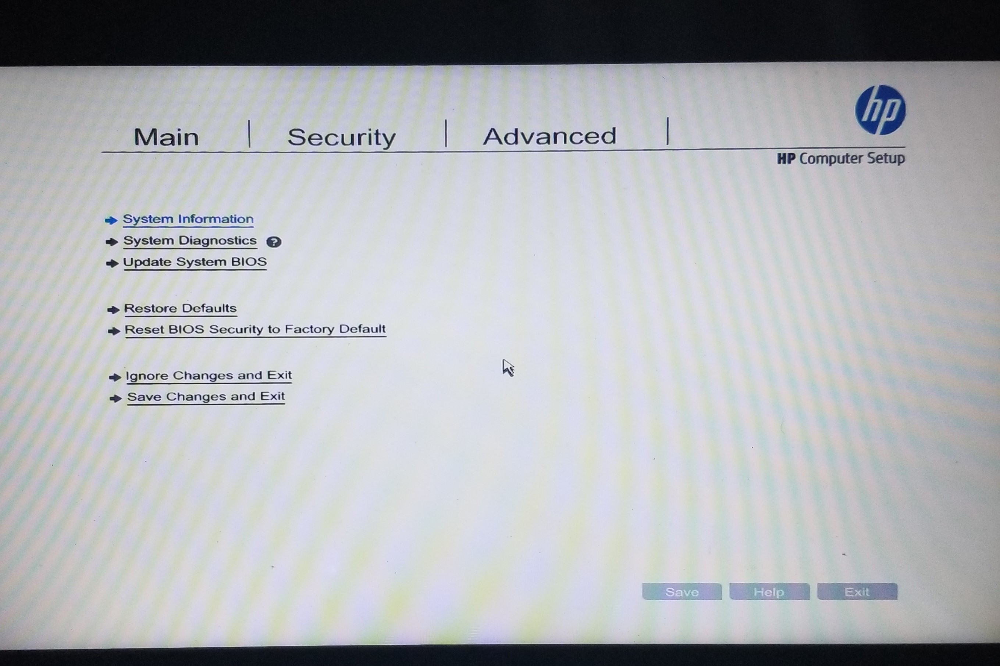
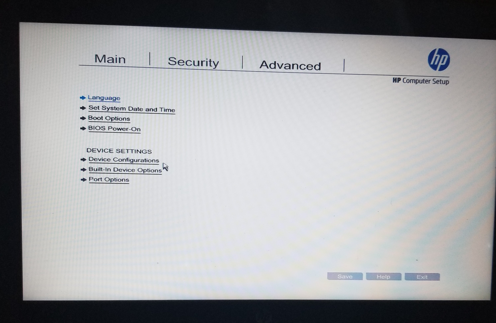
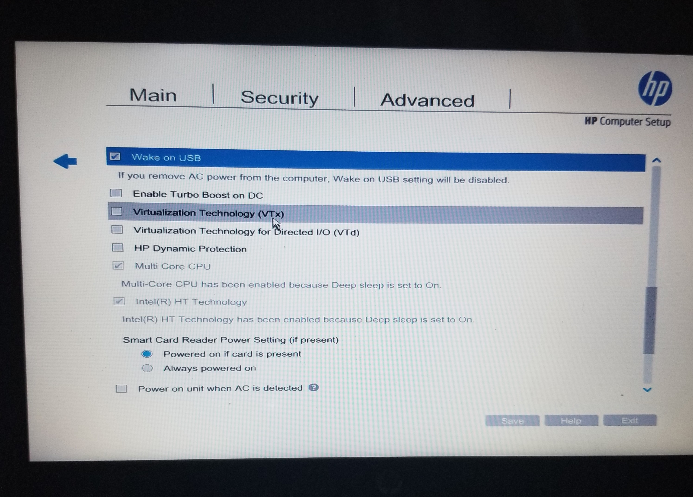
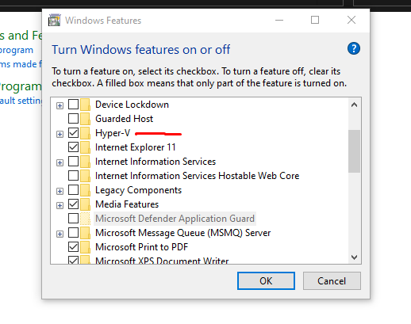
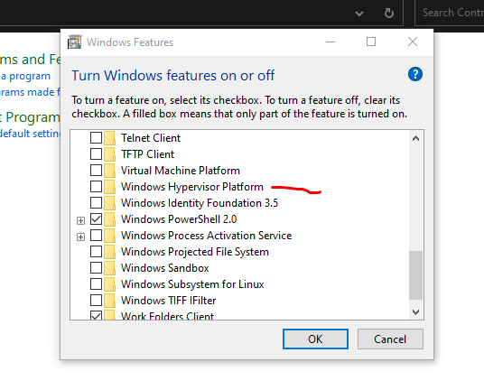

You are excited about installing a virtual machine, you have VMware workstation installed and an iso file. What next, getting ready to install and experience virtualization. But in the course of installation an error message pops up "This host supports Intel VT-x" in VMware Workstation but Intel VT-x is disabled? Error "This host supports Intel VT-x" in VMware Workstation. 
This error can be frustrating, as it prevents you from using virtual machines in VMware Workstation. Fortunately, there are several steps you can take to fix this error. Before we dive into the solution, let's first understand what Intel VT-x is and why it is important. VT-x is Intel's virtualization technology that allows multiple operating systems to run simultaneously on a single processor which enables virtualization. If VT-x is disabled, you won't be able to use virtual machines in VMware Workstation. Now, let's get to the solution. Here are the steps you can take to fix the "This host supports Intel VT-x" error:
Step 1: Check if your computer supports VT-x and enable it The first step is to ensure that your computer's processor supports VT-x. You can check this by going to your computer's BIOS settings. To access the BIOS settings, restart your computer and press the key that appears on the screen to enter the BIOS setup. The key may vary depending on your computer's manufacturer, but commonly used keys are F2, F10, and Delete. 
Once you're in the BIOS setup, go to the advanced tab and click on Device Configurations and scroll down, look for an option called "Virtualization Technology(VTx)" and also "Virtualization Technology for Directed I/O (VTd)" . If you find this options, click on both, save the changes and exit the BIOS setup.. If the option is not present, it means that your processor does not support VT-x.


Step 2: Disable Hyper-V If you're using Windows 10, you may encounter conflicts between Hyper-V and VMware Workstation. To fix this, you need to disable Hyper-V. Here's how: Open the Control Panel and go to "Programs" -> "Turn Windows features on or off." Uncheck the box next to "Hyper-V" and click "OK." Restart your computer. 
Step 3: Disable Windows Hypervisor Platform In some cases, you may also need to disable the Windows Hypervisor Platform. Here's how: Open the Control Panel and go to "Programs" -> "Turn Windows features on or off." Uncheck the box next to "Windows Hypervisor Platform" and click "OK." Restart your computer. 
Step 4: Update BIOS and firmware If none of the above steps work, you may need to update your computer's BIOS and firmware. Check your computer manufacturer's website for the latest BIOS and firmware updates. Follow the instructions provided by the manufacturer to update your system. In conclusion, the "This host supports Intel VT-x" error can be fixed by checking if your computer's processor supports VT-x, enabling VT-x in the BIOS settings, disabling Hyper-V, disabling the Windows Hypervisor Platform, and updating your BIOS and firmware. By following these steps, you should be able to use virtual machines in VMware Workstation without any issues.